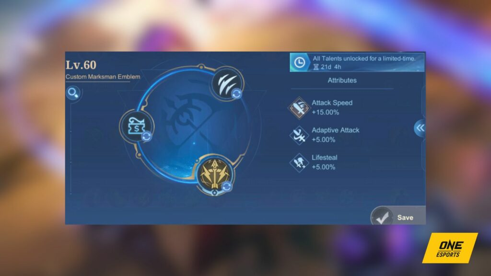
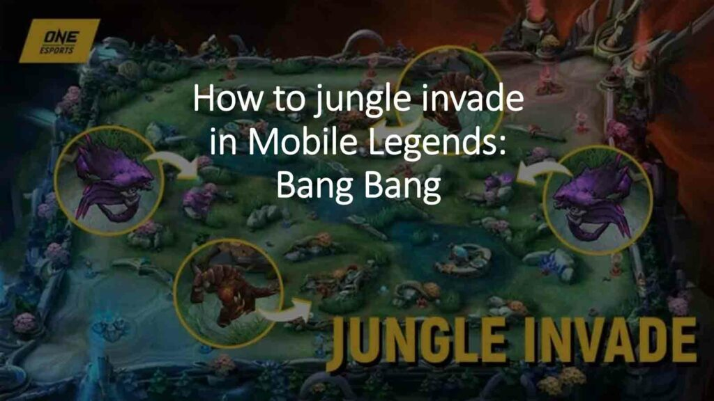
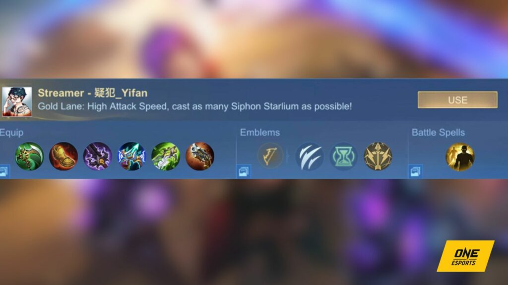

Flicker is the most advantageous selection for Ixia since she lacks mobility skills. This battle spell will
help her position her Full Barrage ability more effectively, as she can use it while the skill is active.
Alternatively, if you prefer a more cautious approach, Aegis is also a viable option. The additional shield
it provides proves highly beneficial in team fights, particularly when facing heroes with high burst damage
capabilities.

Credit: ONE Esports
The Marksman emblem is the most suitable choice for her due to its 15% increase in attack speed. This
boost enables her to activate her passive ability more frequently.
When it comes to talents, it is advisable to select Swift for an additional 10% attack speed.
Furthermore, opting for Bargain Hunter is crucial for Ixia’s success as she heavily depends on
equipment.

Credit: One Esports
The talent offers a 5% discount on all items, addressing this concern effectively.
Lastly, you should prioritize Weakness Finder as the final talent. This choice grants her basic attacks a
slow effect, which proves beneficial not only during regular attacks but also when using her Full
Barrage ability.
Best build for Ixia

Credit: One Esports
To maximize Ixia’s passive during team fights, it is recommended to prioritize attack speed items such as
Corrosion Scythe and Demon Hunter Sword. These items will enable her to trigger her passive more
frequently, increasing her overall damage output.
Next, buy Wind of Nature if the enemy team predominantly consists of heroes with physical damage.
Alternatively, opt for Rose Gold Meteor if two or more enemy heroes primarily deal magic damage.
Blade of Despair is a strong choice for Ixia due to her passive ability, Starlium Siphon, which scales
with physical attack.
If you find yourself dominating the match, go for Malefic Roar to enhance your physical penetration,
thereby further increasing your damage potential.
However, if you are falling behind in the game, it is advisable to adopt a more defensive playstyle and
consider items like Immortality or Winter Truncheon to improve survivability.
Best build for Ixia
- Swift Boots
- Corrosion Scythe
- Demon Hunter Sword
- Blade of Despair
- Wind of Nature
- Malefic Roar
Easy combos to learn
During the laning phase, be aggressive and focus on activating your passive ability against the enemy
marksman as frequently as possible.
Once you reach level four, wait for your teammates to initiate a team fight before activating your
ultimate ability, Full Barrage.
It’s important to note that Ixia is vulnerable while using her ultimate, so ensure that you have Flicker
available in case an enemy hero attempts to burst you down.
The best combo in team fights is to first activate Full Barrage, followed by Dual Beam and Star Helix.
Use them on priority targets such as the marksman or jungler. After that, use your auto attack to finish
the job.
By using your skills on important targets first, they will be the first ones to receive the Siphon
Starlium damage and will be the first to perish in the team fight.
The key strategy is to always follow up each skill with a basic attack to maximize the activation of
Siphon Starlium.
Avoid using Full Barrage when your other two skills are on cooldown, as their cooldowns do not reset once
the ultimate is activated.
Follow ONE Esports on Facebook, Instagram, and Tiktok for MLBB esports news, guides, and updates.